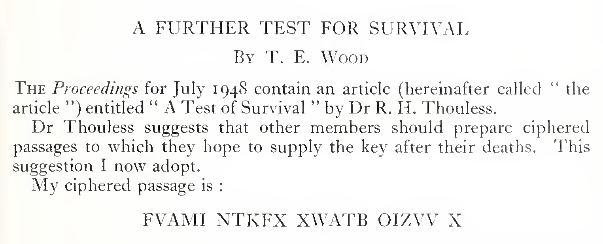

1948 and 1950
The puzzle
Wood's cryptogram was a test of life after death. He would publish a message, die, and then try to send the key back through a medium. Only he knew the key, so a medium who produced it would, he hoped, be evidence that something of him had survived. He was copying an idea from the psychologist Robert Thouless.
Thouless, 1948. In "A Test of Survival" (Proceedings of the Society for Psychical Research 48), Thouless published enciphered messages whose keys only he knew. One of them used a system meant to be unbreakable without the key:
- Pick a passage of text as the key, and skip any word that has already appeared.
- Turn each word into one letter. Add up its letters (A=1 to Z=26), divide by 26, and take the remainder (1 is A, 25 is Y, 0 is Z).
- Use that key letter to shift one message letter along the alphabet. A means no shift, B one place, C two, and so on, wrapping from Z back to A. Decoding shifts the other way.
Each key word supplies the shift for one message letter. So a 21-letter message needs 21 distinct key words.
Wood, 1950. T. E. Wood, a solicitor born in Yorkshire in 1887 who had practised in Burma, answered with "A Further Test for Survival" (Proceedings 49). He published FVAMI NTKFX XWATB OIZVV X and left the following clues:
- he used Thouless's method, with repeated words omitted
- the key passage "is in an accessible book", in a foreign language
- the message "will not be in any one language"

He chose foreign languages on purpose, to defeat anyone guessing common English words. Wood died decades ago, according to Schmeh, and no key ever arrived from the other side.